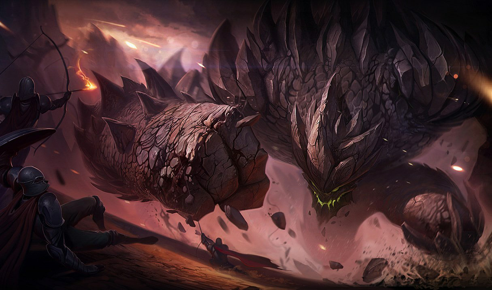

No universo de League of Legends, cada partida é uma batalha épica entre dois times de cinco jogadores, e a escolha do campeão que você controla pode definir o destino do seu time. Com mais de 160 campeões disponíveis, cada um com habilidades únicas, estilo de jogo específico e histórias próprias, encontrar aquele que se encaixa no seu estilo é fundamental para dominar o Summoner's Rift.
Os campeões em LoL não são apenas peças de um jogo – eles são personagens com histórias, motivações e personalidades, que vão desde o impiedoso assassino das sombras até o protetor destemido da justiça. Cada campeão traz consigo um conjunto de habilidades, poderes e pontos fortes que podem virar o rumo da batalha a qualquer momento. Cada campeão tem um papel, cada invocador um destino. Descubra quem será seu aliado no Summoner’s Rift!
Tanques: A Linha de Frente Inabalável

Seja a muralha que separa seu time da destruição! Os tanques são os verdadeiros guardiões do Rift, absorvendo toneladas de dano enquanto protegem seus aliados e iniciam as lutas mais importantes. Se você gosta de entrar de cabeça no combate, sendo o primeiro a se lançar em batalhas épicas, essa classe é feita para você. Tanques são feitos para aguentar – sua alta resistência e habilidades de controle de grupo tornam impossível ignorá-los.
Sua missão é simples: ser a linha de frente que protege seus aliados mais frágeis (como atiradores e magos), absorver dano e, principalmente, abrir oportunidades de ataque para o seu time. Tanques brilham ao iniciar lutas, usando habilidades como levantar, atordoar e prender inimigos, criando espaço para sua equipe brilhar.
Jogar de tanque requer paciência e percepção do momento certo de agir. Você não pode ter medo de entrar nas lutas, mas também precisa saber escolher o momento certo para garantir que sua equipe esteja pronta para seguir. No início, foque em itens de defesa como Coração Congelado ou Placa Gargolítica, que aumentam sua durabilidade e permitem que você se mantenha de pé durante as lutas mais intensas.
Lutadores (Bruisers): Força Bruta e Sobrevivência

Se você prefere estar no meio da batalha, causando muito dano enquanto resiste a golpes inimigos, os lutadores são a sua escolha perfeita. Esses campeões combinam resistência e poder de ataque, sendo ideais para quem quer entrar nas lutas e permanecer até o fim. Eles têm a força para enfrentar campeões inimigos de frente, mas também a agilidade para desviar de grandes perigos.
Lutadores brilham em combates prolongados, onde podem desferir vários golpes e ainda continuar de pé. Eles são o equilíbrio perfeito entre dano e resistência, e se destacam em lutas de 1v1 ou em situações de pequena escala. Em lutas maiores, eles são perfeitos para perseguir os inimigos e garantir que eles não fujam com vida.
Como lutador, sua principal vantagem é a durabilidade em combates longos. Invista em itens que
aumentem tanto sua resistência quanto seu dano, como a Força da Trindade ou Cutelo Negro.
Saiba quando entrar e sair da luta – muitas vezes, um lutador que se posiciona mal pode
acabar caindo antes de causar o impacto esperado.
Magos: Controle e Explosões de Dano

Prefere manter seus inimigos à distância e controlá-los com poderosas habilidades? Os magos são mestres no controle de batalha, causando dano massivo com feitiços e limitando os movimentos do time adversário. Se você gosta de criar oportunidades de ataque para seu time enquanto mantém seus inimigos no escuro, os magos são seu caminho.
Magos são especialistas em causar dano em área e explodir campeões frágeis. Eles se destacam no controle de grupo, usando suas habilidades para enraizar, atordoar e desacelerar o avanço inimigo. Sua função é garantir que o time adversário não consiga se aproximar facilmente, punindo-os com feitiços de longo alcance e fazendo com que cada passo em falso custe caro.
Como mago, sua prioridade é posicionamento e precisão. Foque em maximizar o poder das suas habilidades, e use itens como Cajado do Vazio e Capuz da Morte de Rabadon para amplificar o dano. Tome cuidado para não ficar muito exposto – magos são poderosos, mas também frágeis, então mantenha-se atrás da linha de frente e ataque à distância.
Atiradores (ADC): O Fogo Poderoso da Retaguarda

Os atiradores, ou ADCs (Attack Damage Carriers), são os mestres dos ataques básicos à distância. Se você quer ser aquele que causa o maior dano por segundo (DPS) enquanto se posiciona estrategicamente, então os ADCs são o papel perfeito para você. Embora sejam frágeis, seu dano crescente ao longo do jogo pode definir o destino da batalha.
A função de um atirador é causar o maior dano contínuo possível durante as lutas em equipe, destruindo os inimigos de longe enquanto se mantém protegido pela linha de frente. ADCs são os grandes finalizadores das lutas e os principais responsáveis por derrubar torres rapidamente.
Como atirador, você deve focar em itens que aumentem seu dano de ataque e taxa de acerto crítico, como Gume do Infinito e Canhão Fumegante. Mas lembre-se: posicionamento é tudo. Se ficar muito exposto, você será o primeiro alvo do time adversário, então confie no seu suporte e mantenha-se protegido enquanto causa o máximo de dano possível.
Suportes: O Pilar do Time

Muitas vezes subestimados, os suportes são o coração do time. Se você gosta de proteger seus aliados e controlar o fluxo das batalhas, então o suporte é o seu papel. Eles podem ser defensivos, curando e protegendo, ou ofensivos, iniciando lutas e garantindo que os inimigos sejam punidos por seus erros.
O papel do suporte é garantir que o atirador brilhe na fase de rotas e, mais tarde, auxiliar o time nas lutas. Seja através de curas, escudos ou controle de grupo, o suporte é essencial para manter a equipe viva e garantir a vitória nas batalhas de equipe. Eles controlam a visão do mapa com wards, protegem os aliados frágeis e frequentemente são os heróis não reconhecidos que salvam o jogo com suas jogadas decisivas.
Como suporte, sua função vai muito além de simplesmente seguir o ADC. A visão de mapa é sua maior arma, então sempre fique atento a colocar sentinelas nas áreas estratégicas e destruir as wards inimigas. Durante as lutas, preste atenção nas necessidades do seu time – um escudo na hora certa, um atordoamento bem posicionado, ou até mesmo um silêncio em um mago adversário pode ser a diferença entre vitória e derrota. Invista em itens de utilidade como Redenção e Juramento do Cavaleiro para maximizar seu impacto nas lutas de equipe.